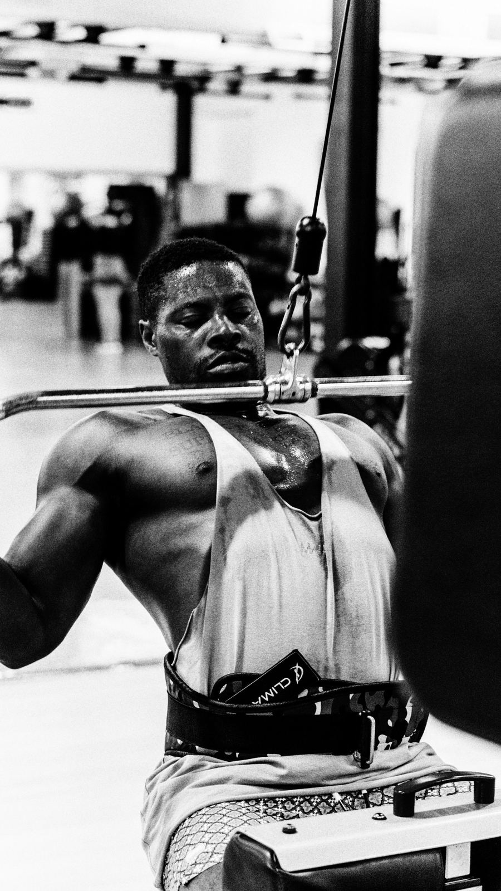

Información real sobre entrenamiento, nutrición y por qué el camino natural —aunque más lento— es el único que no te cobra factura después.

Los riesgos reales, lo que le pasa a tu cuerpo cuando dejas el ciclo, y por qué el camino natural sigue siendo la mejor inversión a largo plazo.
Mitos"Si no duele no sirve", "el peso muerto lastima la espalda", y otras creencias explicadas a fondo, con la ciencia detrás de cada una.
NutriciónLa cifra exacta según tu peso y objetivo, con base científica, y por qué comer proteína de más no te hace ganar músculo más rápido.
EntrenamientoQué ejercicios priorizar cuando estás empezando, cuántos días entrenar, y los errores más comunes del primer año.
SuplementosEl suplemento más estudiado del mundo del fitness, explicado sin mitos: dosis, momento del día, y qué esperar realmente.